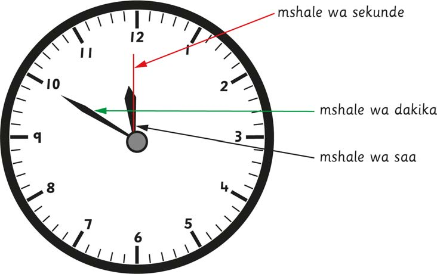
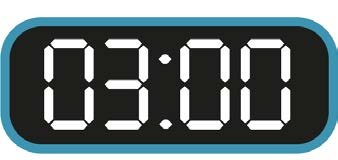

Kusoma muda kwa mtindo wa saa 12
Katika kusoma saa ya mshale, mshale mfupi ni mshale wa saa. Mshale unaofuata kwa urefu ni mshale wa dakika. Mshale ulio mrefu zaidi na mwembamba ni mshale wa sekunde. Mishale yote huzunguka uso wa saa kuanzia kushoto kuelekea kulia.

mshale wa sekunde
mshale wa dakika
mshale wa saa
Katika saa ya kidigiti, saa na dakika hutenganiswa na nukta pacha (:). Tarakimu mbili za mwanzo kushoto huonesha saa. Tarakimu mbili zanazofuata huonesha dakika kama inavyooneshwa katika mchoro ufuatao:
